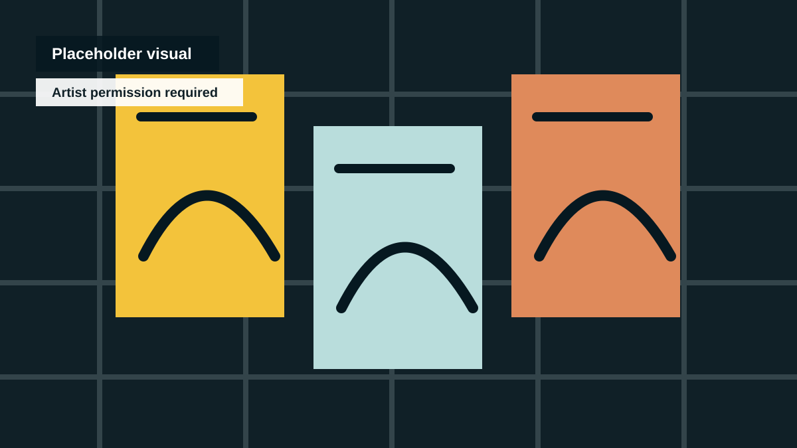
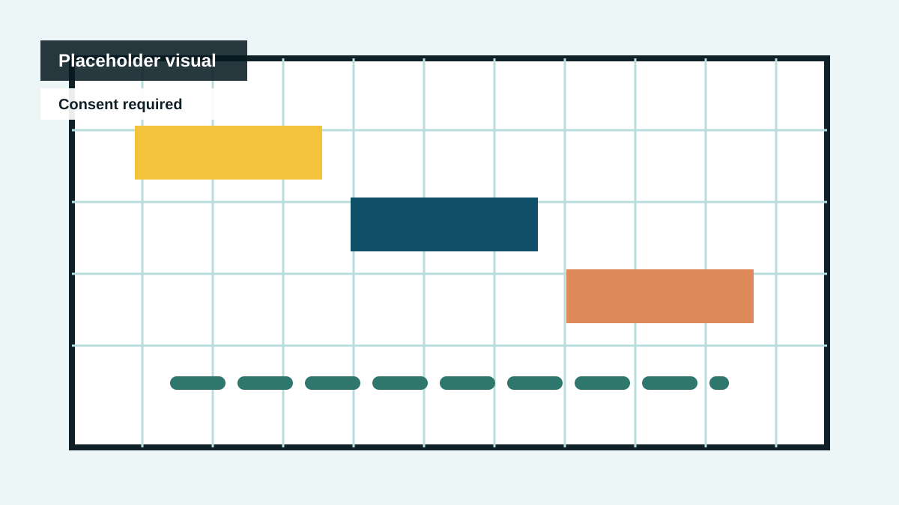
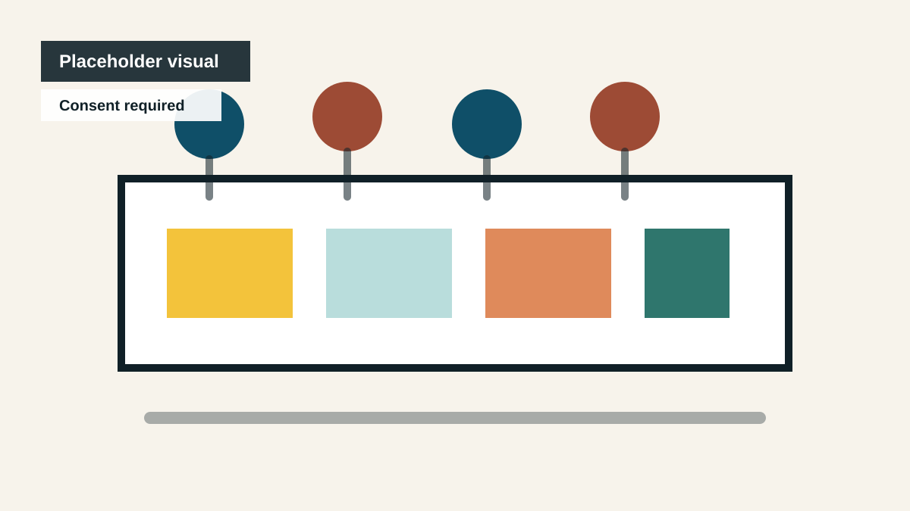
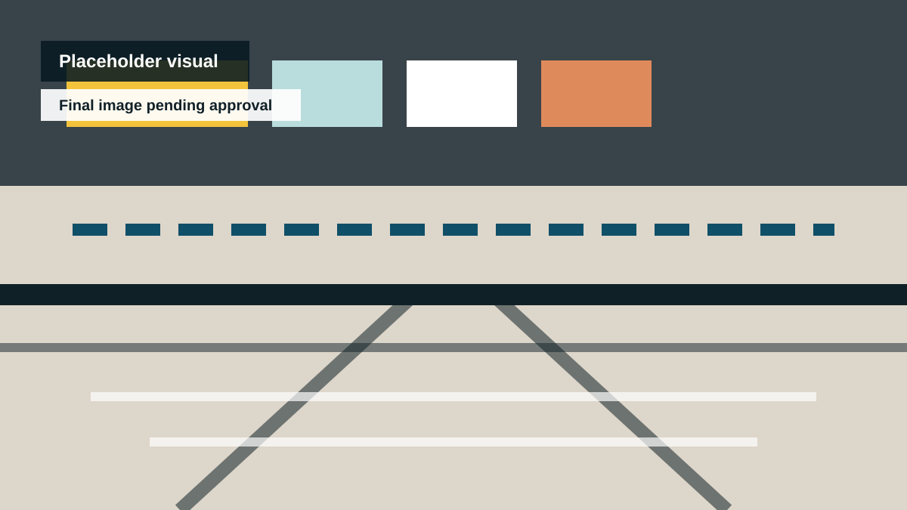

Small wall / mural pilot
One approved wall or mural site gets a lightweight learning layer: title, prompt, artist note, and printable activity.
Next step: identify one wall, owner, artist permission path, and maintenance contact.
Public Art Pilots
The first pilot should be useful, low-risk, explainable in one sentence, and easy to stop or improve after review.
Recommended sequence
The safest candidate is the Library Creativity Hub / Creative Pack because it can run print-first, adult-supported, and no-login while the project builds proof.

One approved wall or mural site gets a lightweight learning layer: title, prompt, artist note, and printable activity.
Next step: identify one wall, owner, artist permission path, and maintenance contact.

A short public walk uses QR links as doorways into local noticing, writing, sketching, memory, and place prompts.
Next step: choose three stops and prove the no-login, printable fallback path.

Student artworks become a supervised scan trail for a school event, library display, or family open afternoon.
Next step: set consent, moderation, and adult-led display rules before collecting any work.

A library table, poster wall, and print pack invite families to try a short prompt and leave with a creative action.
Next step: ask for one library conversation and test a printable pack with no child data.
A stall or small activation turns public foot traffic into quick creative participation: poster responses, sketch cards, and local idea capture.
Next step: choose one market date, table format, consent language, and pack contents.

Use the decision sheet to avoid bundling every pilot into one ask.
Council-safe ask
Ruthless rule
A good first pilot should be explainable to a parent, teacher, councillor, or librarian in one sentence.